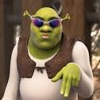
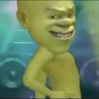
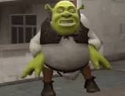
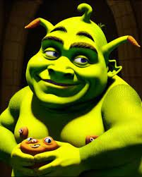

shrek is the funnyes cherecter.i loveee shrek.Shrek almost had a different accent because of Myers. "Shrek" is actually based on a children's book from 1990. shrek is scared of not being liked or respected by other people
 The name "Shrek" is derived from the German word Schreck, meaning "fright" or "terror". In the films, Shrek was voiced by Mike Myers, and in the musical, he was played principally by Brian d'Arcy James. shrek is know for the a highly successful series of animated films.
 